총 29건
A.‘노인장기요양등급’은 ‘노인장기요양보험제도’를 이용하려고 받는 요양 등급을 말합니다. 국민건강보험공단이 비용의 85%를 지원하는 제도로, 만 65세 이상이거나 65세 미만이라도 노인성 질환 때문에 혼자서 일상생활을 하기 어려운 분들이 등급 판정을 받은 뒤, 몸을 움직이는 일이나 집안일을 돕는 장기요양 급여를 받을 수 있습니다. 등급 판정은 “건강이 아주 나쁘다”, “큰 병에 걸렸다.” 같은 느낌이 아니라 “몸과 마음의 상태로 볼 때 일상생활에서 도움(장기요양)이 얼마나 필요한가?”를 점수로 나타낸 장기요양인정 점수에 따라 아래처럼 6개 등급으로 나눕니다. **노인 장기요양 등급** 1) 1등급 : 일상생활 전부에 다른 사람의 도움이 필요한 분으로 장기요양인정 점수가 95점 이상인 분 2) 2등급 : 일상생활 대부분에 다른 사람의 도움이 필요한 분으로 장기요양인정 점수가 75점 이상 95점 미만인 분 3) 3등급 : 일상생활 일부에 다른 사람의 도움이 필요한 분으로 장기요양인정 점수가 60점 이상 75점 미만인 분 4) 4등급 : 일상생활 어느 정도에 다른 사람의 도움이 필요한 분으로 장기요양인정 점수가 51점 이상 60점 미만인 분 5) 5등급 : 치매 환자로서 장기요양인정 점수가 45점 이상 51점 미만인 분 6) 인지지원등급 : 주야간 센터에서 치매 프로그램 지원만 받을 수 있음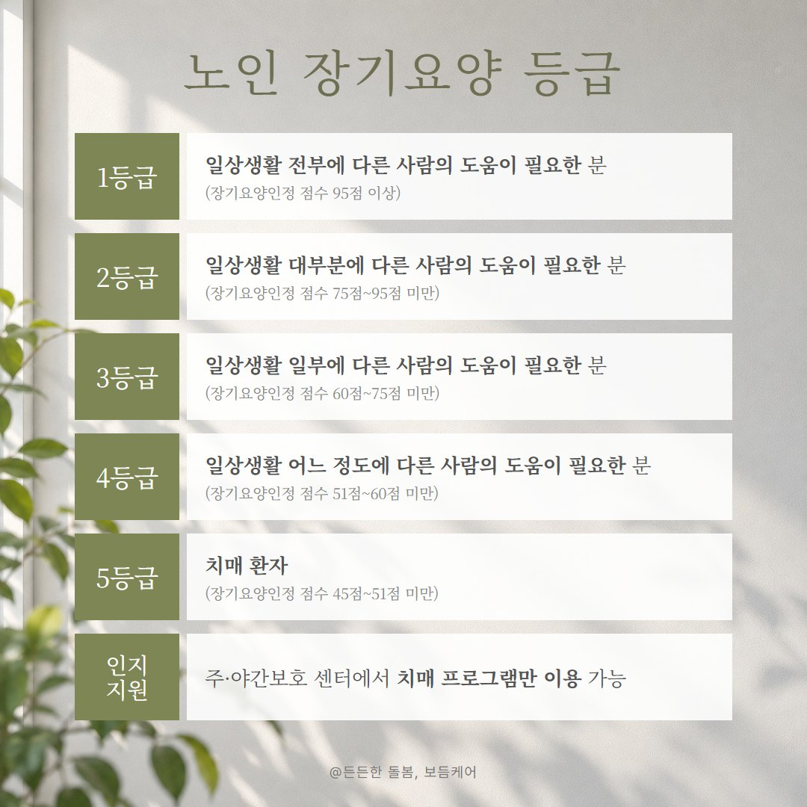
A.'노인장기요양보험제도'는 나이가 많거나 노인성 질병 때문에 혼자서 일상생활을 하기 어려운 분들에게 몸을 움직이는 일과 일상생활을 돕는 서비스를 드려, 노후 생활을 안정시키고 가족의 짐을 덜어 주려는 사회보험 제도입니다. 65세 이상 노인이나 치매, 중풍, 파킨슨병 같은 노인성 질병을 앓는 65세 미만인 분 가운데 6개월 넘게 혼자서 일상생활을 하기 어려워 장기요양 서비스가 필요하다고 인정되는 분에게 장기요양등급을 판정하고 그에 맞는 급여를 드립니다. ** 장기요양등급 : 1등급, 2등급, 3등급, 4등급, 5등급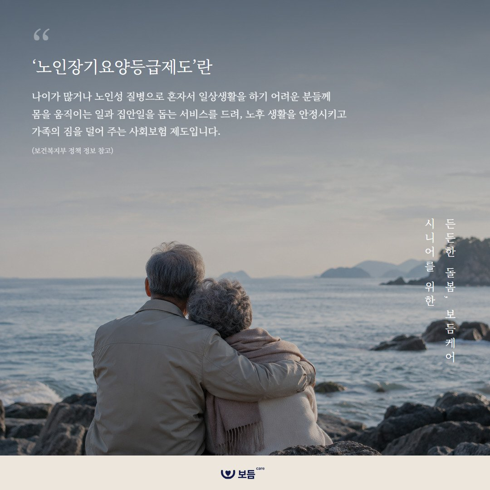
장기요양장기요양 인정은 어떻게 받나요? (인정 절차)
A.장기요양 인정(등급 신청)을 받기까지의 절차는 아래와 같습니다. ① (공단 지사별 장기요양센터) 장기요양 등급 신청 ② (공단 직원) 집으로 찾아와 조사 ③ (등급판정위원회) 장기요양 인정과 등급 판정 ④ (장기요양센터) 장기요양인정서와 표준장기요양이용계획서 알림 ⑤ (장기요양기관) 서비스 이용 **보건복지부 정책 안내 내용 가운데 일부 이 가운데 '장기요양 인정 (등급) 신청'은 공단 지사별 '장기요양센터'나 '보듬케어' 서비스로도 신청할 수 있습니다.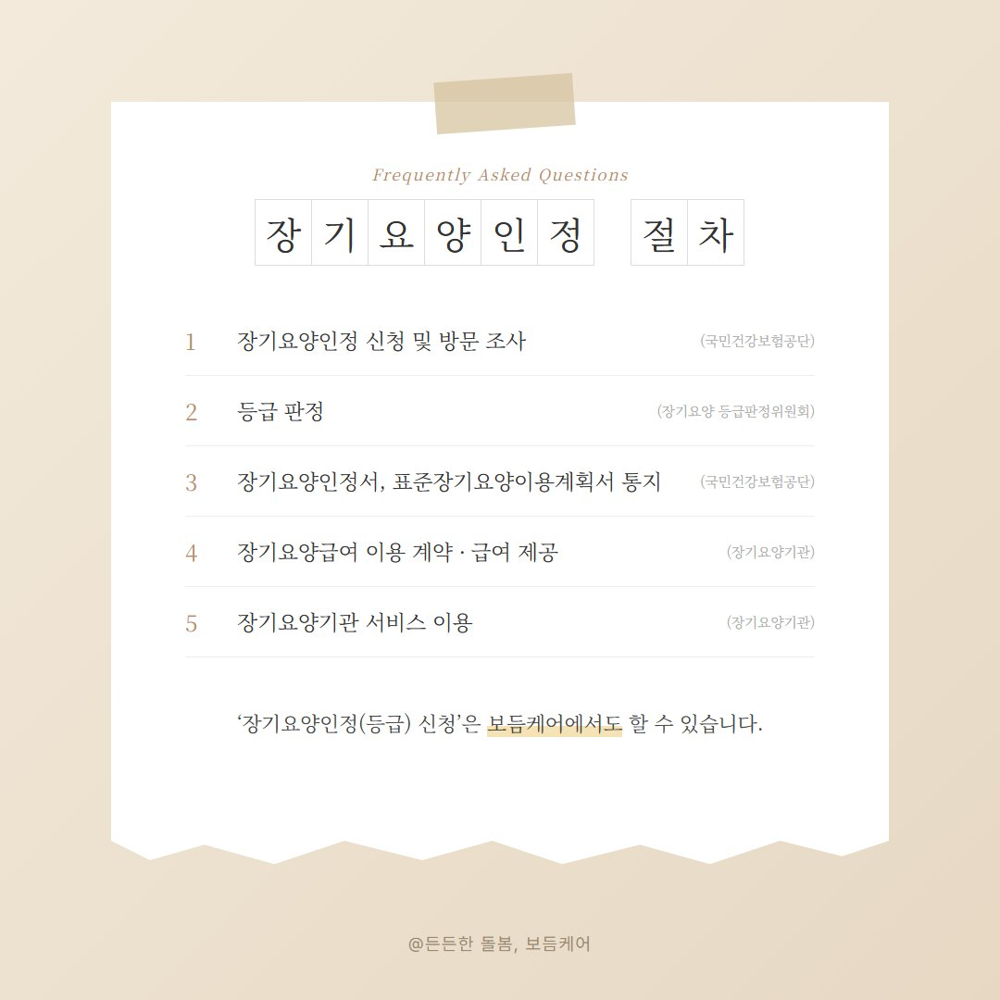
장기요양장기요양등급을 신청할 때 나이 제한이 있나요?
A.만 65세 이상 노인이나 치매, 중풍, 파킨슨병 같은 노인성 질병을 앓는 65세 미만인 분 가운데 6개월 넘게 혼자서 일상생활을 하기 어려워 장기요양 서비스가 필요하다고 인정되면 등급을 받을 수 있습니다.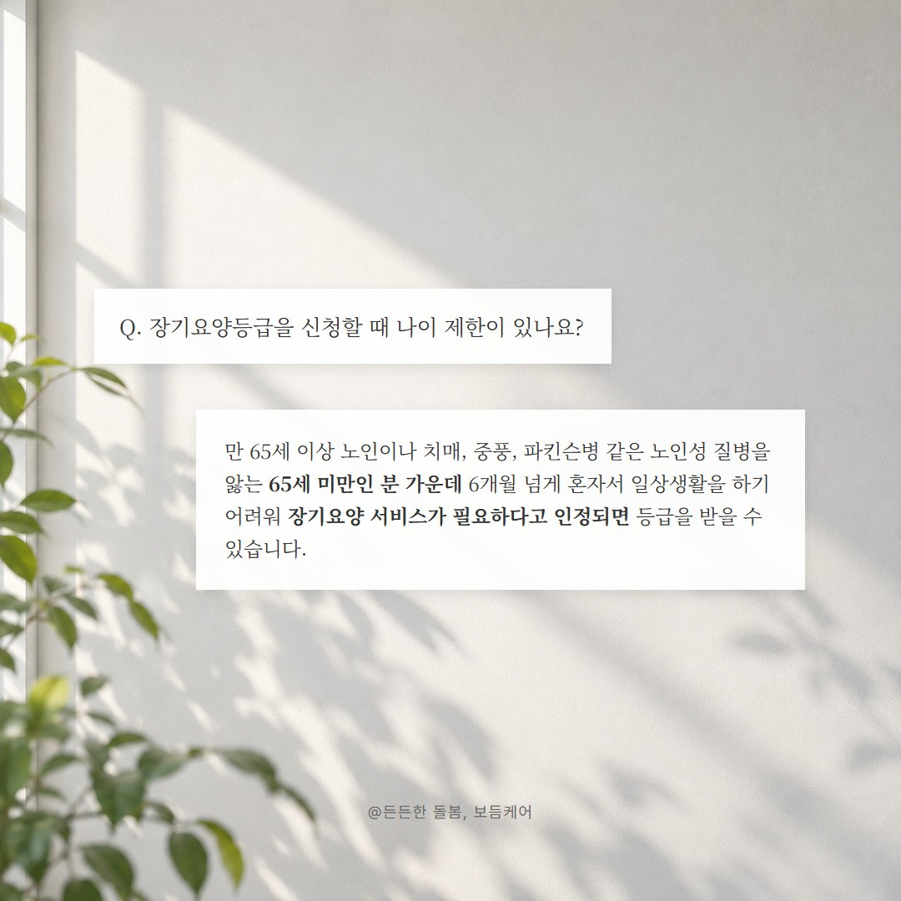
장기요양장기요양 서비스는 누구나 쓸 수 있나요?
A.아닙니다. 장기요양 서비스는 65세 이상이거나 65세 미만이라도 노인성 질병*이 있는 분만 대상으로 하며, 장기요양보험 가입자와 그 피부양자, 의료급여 수급권자에게 자격이 주어집니다. *노인성 질병: 치매, 뇌혈관 질환, 파킨슨병 등 대통령령으로 정한 질병 / 아래 표 그림 참고 (한국표준질병사인분류표 그림)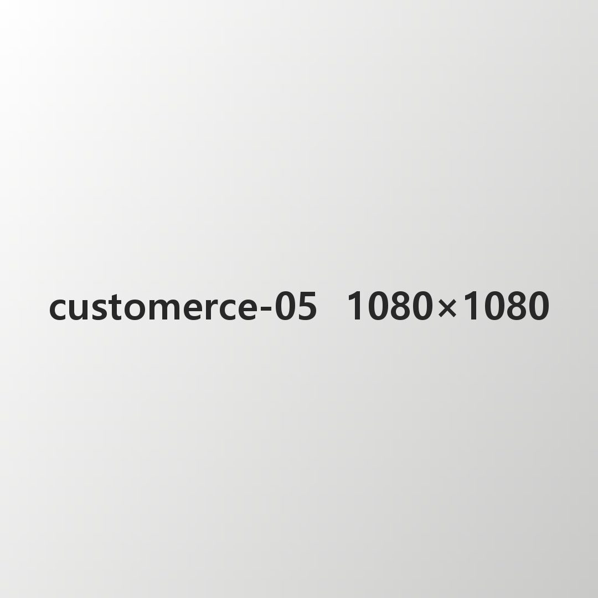
A.장기요양 급여는 크게 재가급여, 시설급여, 특별 현금급여로 나뉘며 이 가운데 한 가지만 이용할 수 있습니다.(함께 이용 불가) 다만 가족요양비(특별 현금급여)를 받는 분은 복지용구(기타 재가급여)를 더 이용할 수 있고, 장기요양 1등급이나 2등급인 수급자는 재가급여나 시설급여를 이용할 수 있습니다. 3~5등급과 인지지원등급 수급자는 재가급여를 이용할 수 있으며, 3~5등급 수급자라도 등급판정위원회에서 시설급여가 필요하다고 인정받으면 시설급여를 이용할 수 있습니다. (1) 시설급여 장기요양기관이 운영하는 노인요양시설, 노인요양공동생활가정 같은 노인의료복지시설(요양병원 제외)에 오래 머물며 몸을 움직이는 일을 돕고, 몸과 마음의 기능을 지키고 높이는 교육∙훈련 등을 받습니다. (2) 재가급여 수급자의 집이나 재가노인복지시설에서 몸을 움직이는 일, 인지 활동, 집안일 등을 돕는 서비스를 받으며, 방문요양, 방문목욕, 방문간호, 주∙야간보호, 단기보호와 복지용구가 여기에 들어갑니다. (3) 가족요양비(특별 현금급여) 섬이나 외딴 곳, 천재지변이나 그 밖의 까닭으로 장기요양기관의 급여를 받기 어려울 때 가족요양비(매달 수급자에게 15만원 지급)를 드려 가족에게서 장기요양을 받을 수 있게 하는 특별 현금급여입니다.
A.이제 '장기요양'은 65세 이상 시니어만의 이야기가 아닙니다. 내 부모님과 가족, 그리고 앞날의 나에게도 닿는 '우리 모두'의 이야기입니다. 그래서 '보듬케어'는 먼 훗날 일처럼 느껴지는 노후와 요양에 더 쉽고 편하게 다가갈 수 있도록 만들었습니다. 보듬케어는 '장기요양 서비스가 필요한 수급자와 그 가족을 위한' 돌봄 서비스로, 전국 시니어 가족과 2만여 곳의 장기요양기관 정보를 함께 담고 있습니다. 어렵게만 느껴지던 장기요양 인정 '등급 신청'은 물론, 받은 등급으로 어떤 서비스를 어떻게 받을 수 있는지, 집 가까운 센터 찾기, 나와 맞는 센터 연결까지 보듬케어에서 한 번에 할 수 있습니다. ✔️ 정밀/간단 테스트로 장기요양 예상 등급을 미리 알아보고, ✔️ 등급 신청 여부를 확인한 뒤 장기요양 등급 신청서를 쓰고, ✔️ 수급자에게 맞는 요양기관을 찾아 센터를 연결하고, ✔️ 요양 비용을 계산하고 이용 사례를 살펴보고, ✔️ 알아 두면 쓸모 있는 시니어 정보와 즐거운 이벤트까지 가득한 '장기요양의 모든 것' 보듬케어! 꼭 장기요양 서비스가 아니더라도 시니어에게 필요한 정보와 알아 두면 좋을 정책 정보까지 빠르고 알기 쉽게 전해 드립니다. 장기요양 등급 신청과 서비스 받기가 막막하셨다면, '보듬케어'로 시작해 보세요.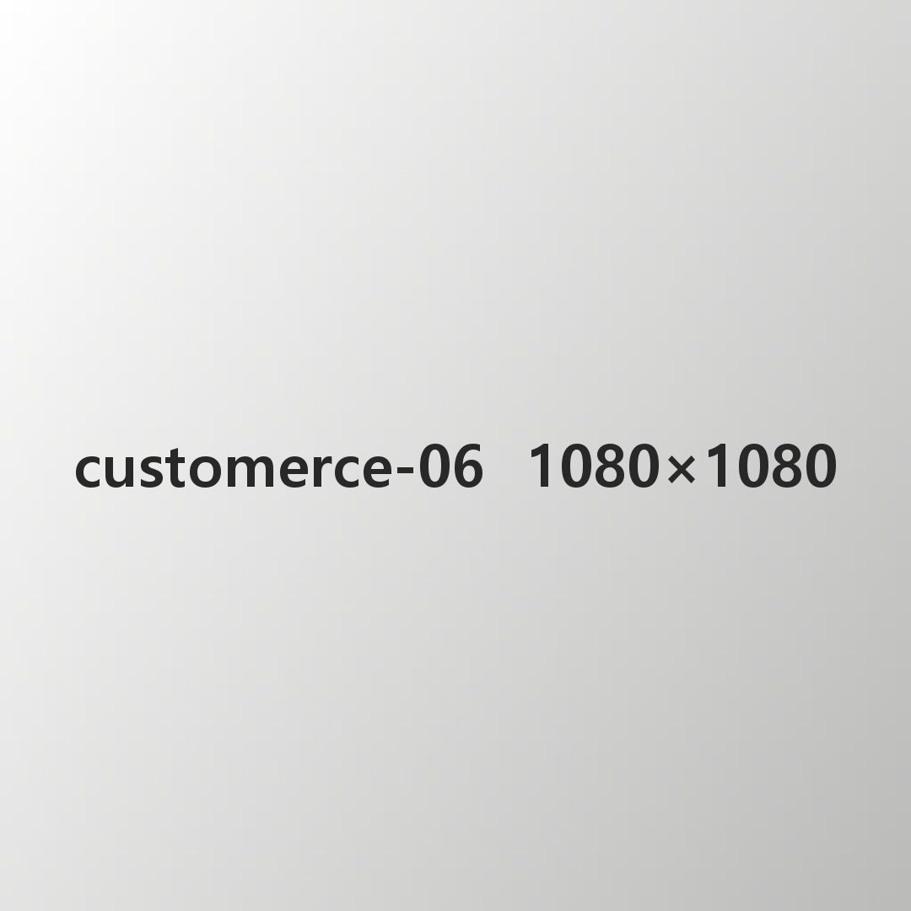
A.보듬케어는 무료 서비스입니다. 따로 드는 서비스 비용이 없습니다.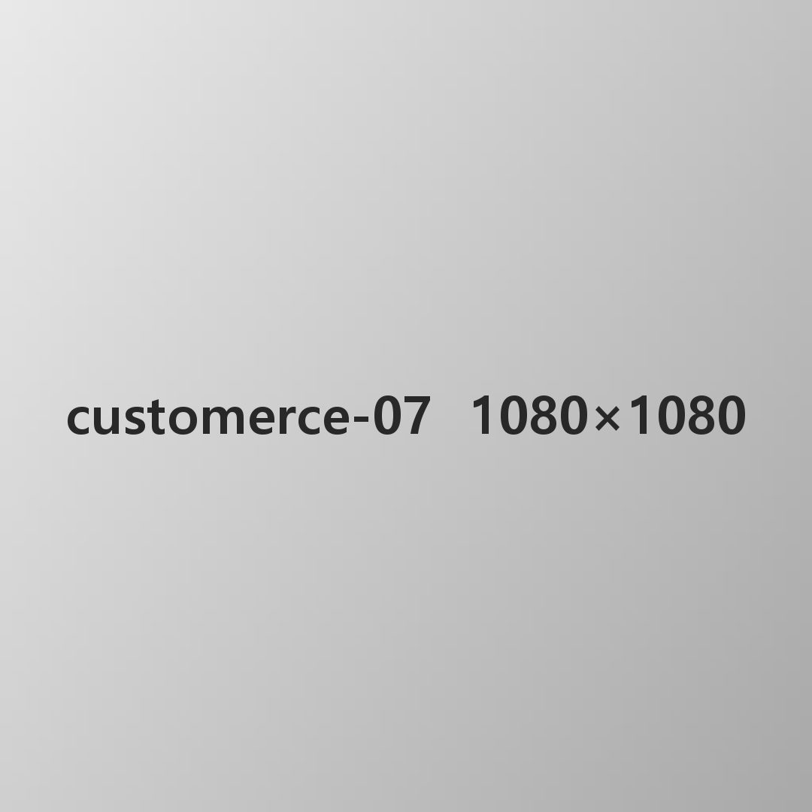
장기요양장기요양보험 수급자는 어떤 분을 말하나요?
A.'수급자'는 장기요양보험 급여를 받는 분을 이르는 말로, 65세 이상 어르신이나 65세 미만이라도 치매, 뇌졸중, 파킨슨병 같은 노인성 질병 때문에 6개월 넘게 혼자서 일상생활을 하기 어려운 분 가운데, 등급 판정 기준에 따라 장기요양 1등급~5등급과 인지지원등급을 인정받은 분을 말합니다. 수급자는 장기요양 인정 등급 판정에 따라 재가급여, 시설급여, 특별 현금급여(가족요양비)로 나뉘는 급여 가운데 한 가지만 이용할 수 있습니다.
이용 방법보듬케어는 '수급자'만 가입해야 하나요?
A.그렇지 않습니다. 장기요양은 수급자뿐 아니라 수급자의 가족과 보호자 모두에게 필요한 일이라, 꼭 '수급자'가 아니어도 수급자의 가족/보호자(또는 법적 대리인)까지 누구나 가입할 수 있습니다. 또 보듬케어에 가입한 뒤에는 수급자 본인이든 수급자를 대신해 가입한 가족이든 '장기요양 등급 신청'을 비롯해 '센터 찾기', '센터 매칭'까지 수급자를 위한 보듬케어의 모든 서비스를 이용할 수 있습니다. 예시) ① 수급자 본인이 가입한 경우 서비스 이용 가능(수급자='어머니', 가입자='어머니 본인') 만 65세 이상이면 수급 대상자이므로 본인이 직접 가입해 서비스를 이용할 수 있습니다. ② 가입자와 수급자가 다른 경우, 가족카드 등록 뒤 서비스 이용 가능. 수급자='어머니', 가입자='아들'이라면 법적 보호자이자 가족인 '아들'이 보듬케어에 가입하고, '수급자'인 '어머니'를 보듬케어에 (가족카드) 등록한 뒤 '장기요양 등급 신청서'를 써서 신청할 수 있습니다. (단, 대신 신청할 때는 꼭 등급을 신청하는 수급자에게 정보 제공 동의를 받아야 합니다.) ③ 가족 가입자와 수급자가 모두 가입한 경우, 모두 서비스 이용 가능. 등급 판정 뒤에는 가입자가 '누구든' 센터 찾기, 센터 매칭 등 보듬케어의 장기요양 서비스를 두루 받으실 수 있습니다.
이용 방법보듬케어를 이용하려면 어떻게 해야 하나요?
A.보듬케어는 간편 회원 가입으로 빠르고 쉽게 가입해 서비스를 이용할 수 있습니다. 꼭 회원 가입을 하지 않더라도, 가족 가운데 이미 보듬케어 회원이 있다면 '가족카드 등록'으로 쉽게 이용할 수 있습니다. * 보듬케어는 아래 소셜 계정으로 간편하게 가입할 수 있습니다. 카카오톡, 네이버, 애플, 구글 *가족카드란? 가입자가 꼭 수급자가 아니더라도, 수급자(장기요양 등급 신청자나 장기요양보험 대상자)를 대신해 가족이 가입(보호자나 법적 대리인)해서 보듬케어 서비스를 이용하려고 등록하는 '가족카드'를 말합니다. 가입자는 수급자를 위해 장기요양 등급 신청서 작성과 신청, 센터 매칭까지 보듬케어 서비스를 이용할 수 있습니다.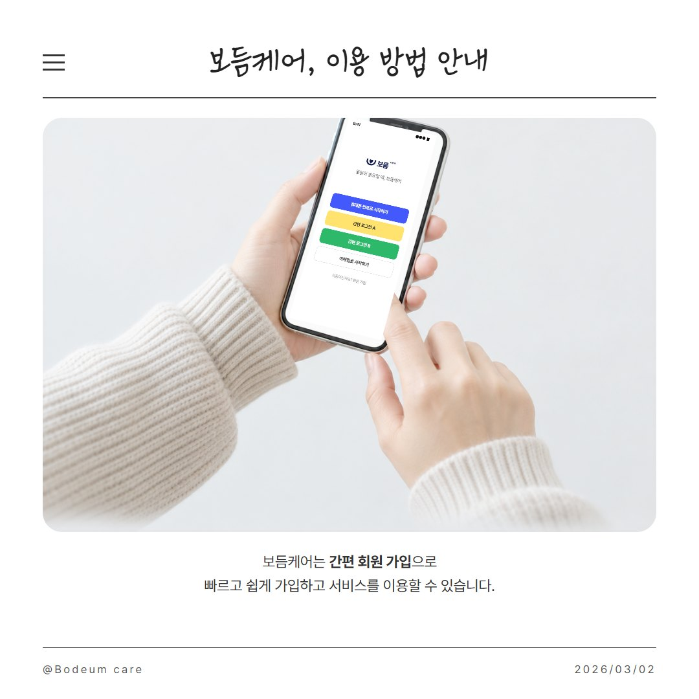
이용 방법보듬케어에서 장기요양 등급 신청을 하고 싶어요.
A.국민건강보험공단에 가지 않고도 보듬케어로 장기요양 인정 신청을 할 수 있습니다. 처음 신청, 갱신/변경에 따라 아래처럼 신청서를 써 주세요. ① 처음 등급 신청서를 쓰는 경우, 보듬케어 > 장기요양 등급 신청 > 장기요양 등급 신청서 쓰기 ② 등급 변경을 신청하는 경우 보듬케어 > 장기요양 등급 신청 > 장기요양 등급 변경 신청서 쓰기 ③ 등급 갱신을 신청하는 경우 보듬케어 > 장기요양 등급 신청 > 장기요양 등급 갱신 신청서 쓰기 다 쓴 등급 신청서는 수급자가 사는 곳의 국민건강보험공단으로 보듬케어가 대신 웹 팩스로 보내 드립니다. 단, 대신 신청할 때는 꼭 등급을 신청하는 수급자 어르신의 정보 제공 동의를 받으셔야 하며, 보듬케어는 신청할 때 넣은 개인 정보를 저장하거나 쓰지 않고 웹 팩스를 보낸 뒤 바로 지웁니다.
이용 방법장기요양 등급 신청 전에, 예상 등급을 미리 알 수 있나요?
A.보듬케어에서는 '간단 장기요양등급 테스트'와 '정밀 장기요양등급 테스트'로 예상 등급을 확인할 수 있습니다. 정밀 등급 테스트는 정부가 고시한 장기요양 등급 판정 기준 자료를 바탕으로 만든 테스트를 드리고 있습니다. 조금 더 빨리 등급을 짐작해 보고 싶다면 '간단 등급 테스트'를 해 보세요. 1분이면 빠르고 간단하게 예상 등급을 알아볼 수 있습니다. 또 인지지원등급이 의심되거나 확인해 보고 싶다면 목소리로 하는 'AI 치매예측' 서비스를 권해 드립니다. 스마트폰과 이어폰만 있으면 목소리로 간편하게 치매 예측을 해 볼 수 있습니다.
A.가족카드는 계정 하나로 여러 수급자를 함께 관리하고 돌볼 수 있는 보듬케어만의 서비스입니다. 보호자와 수급자가 같아도 달라도, 여럿이어도(엄마, 아빠, 할머니, 할아버지…등) 걱정 없이 수급자마다 가족카드를 등록하고 관리할 수 있습니다. 이렇게 만든 가족카드마다 장기요양 인정 등급을 신청할 수 있고, 센터 매칭, 인정 등급 갱신/수정 신청까지 맞춤 서비스를 받아 볼 수 있습니다. 가족카드는 로그인한 뒤 마이페이지에서 등록하고 관리할 수 있습니다. 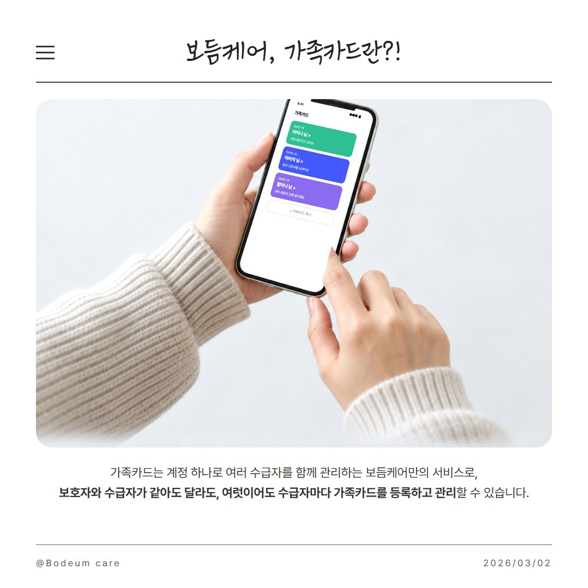
A.네, 등록할 수 있습니다. 보듬케어 첫 화면에서 수급자 추가를 누른 다음 기본 정보를 넣어 주시면 됩니다. 그리고 마이페이지의 수급자 목록에서 추가한 수급자의 정보를 확인하실 수 있습니다. 인정서 등록까지 해 주시면 보듬케어 도우미 신청과 센터 매칭 제안도 받으실 수 있습니다. 정보를 고치거나 지우고 싶다면 마이페이지의 수급자 목록에서 정보를 수정하거나 삭제할 수도 있습니다.
이용 방법보듬케어에서 등급을 신청하면 비용이 드나요?
A.보듬케어에서 등급을 신청할 때 드는 비용은 없습니다.
장기요양외국 국적을 가진 분도 신청할 수 있나요?
A.장기요양보험료를 내셨다면, 똑같이 등급을 신청할 수 있습니다. 자세한 문의는 국민건강보험공단 고객센터 1577-1000으로 하셔야 합니다.
장기요양의사소견서는 가까운 병원 진단서로 받으면 되나요?
A.의사소견서는 노인성 질환에 관한 내용만 적힌 것을 인정합니다. 자주 가는 병원에서 의사소견서를 받으셔도 되지만, 그 병원이 인터넷으로 접수해 주는 곳인지, 장기요양 등급용 의사소견서를 발급할 수 있는지 먼저 확인한 뒤 가시기를 권해 드립니다. 인터넷 접수를 하지 않는 병원이라면 의사소견서를 받아 공단에 직접 내셔야 하며, 자주 가는 병원에서 의사소견서를 발급하지 않는다면 보듬케어 앱의 장기요양 등급 신청하기에서 의사소견서 온라인 신청으로 소견서를 발급하는 병원을 찾아보실 수 있습니다.
장기요양등급을 신청했는데 등급 외 판정을 받았어요. 등급을 받아 서비스를 이용하고 싶은데 방법이 있나요?
A.전에 등급을 신청하신 적이 있다면, 3개월 뒤에 다시 신청하시기를 권해 드립니다. (건강보험공단 권장 사항) 다만 결과에 동의하지 않는다면 결정 통지를 받은 날부터 90일 안에 보건복지부 장관 소속의 장기요양재심사위원회에 재심사를 청구할 수 있습니다. 재심사를 청구하려면 재심사 청구서에 주장하는 사실을 증명할 자료를 붙여 장기요양재심사위원회에 내야 합니다. ※ 등급 외 판정을 받았을 때 받을 수 있는 보건복지 서비스 장기요양 인정 등급 외 판정을 받으면 지역사회의 노인 보건복지 서비스를 받을 수 있도록 국민건강보험공단과 시·군·구에서 이어 드리고 있으니 참고하시기 바랍니다. 등급 외 판정을 받으면 아래와 같은 지역 보건복지 서비스를 받을 수 있습니다. 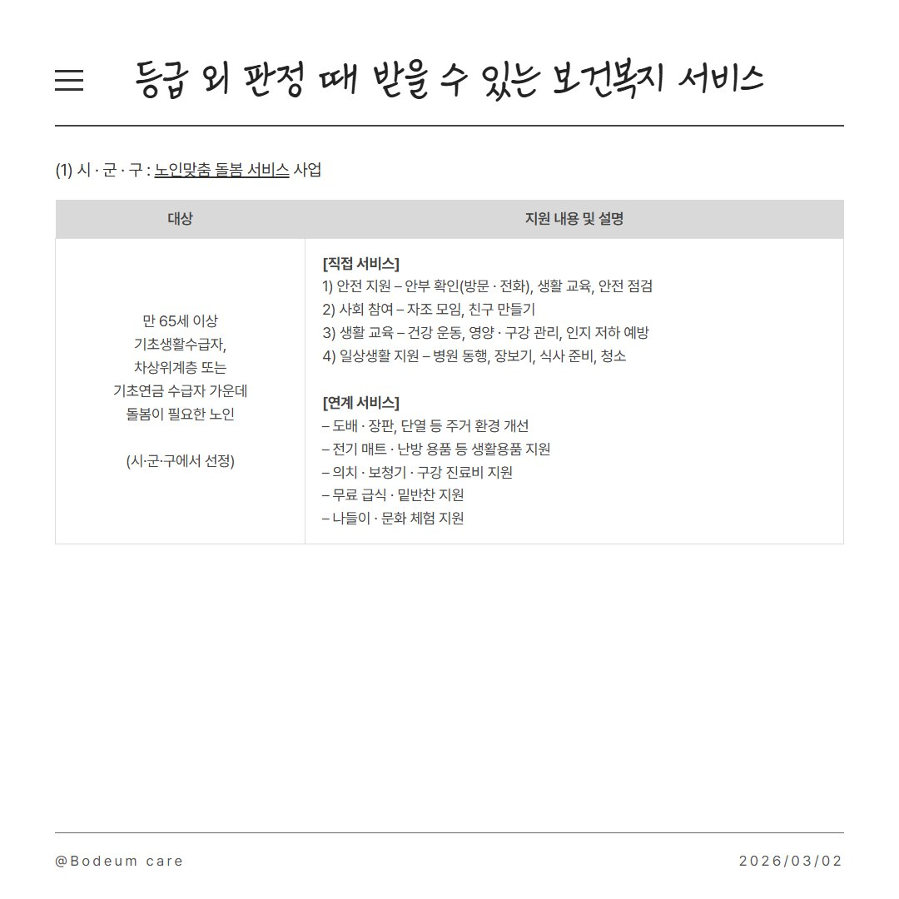
장기요양수술 뒤나 입원 중에도 신청할 수 있나요?
A.수술을 받았거나 병원에 입원 중이라면 3개월 뒤에 등급을 신청할 수 있습니다.
장기요양장기요양 등급마다 받을 수 있는 서비스는 어떻게 다른가요?
A.장기요양 인정 등급마다 받을 수 있는 서비스로는 재가급여인 방문요양, 방문목욕, 방문간호, 주·야간보호, 단기보호, 인지활동형 방문요양, 기타 재가급여(복지용구)와 시설급여인 노인요양시설, 노인요양공동생활가정, 특별 현금급여인 가족요양비가 있습니다. ※ 등급마다 이용할 수 있는 서비스는 아래와 같습니다. · 장기요양 1~2등급 수급자 : 재가급여나 시설급여 서비스 이용 가능 · 장기요양 2~5등급 수급자 : 재가급여 이용 가능 · 3~5등급이지만 시설급여가 필요한 경우 : 장기요양 급여 종류·내용 변경 신청 필요 · 치매가족 휴가제는 치매가 있는 수급자가 이용 가능(치매가족 휴가제는 6일에서 8일로 늘었습니다.) · 인지지원등급 : 주·야간보호 · 등급 외 판정자 : 지역 보건복지 서비스 이용 가능(노인맞춤돌봄서비스 등) ※ 재가급여 서비스별로 드리는 것 ① 방문요양 ▶ 요양보호사(장기요양요원)가 장기요양등급 1~5등급 판정을 받은 수급자의 집 등을 찾아가 몸을 움직이는 일과 일상생활, 개인 활동 등을 돕습니다. ② 방문목욕 ▶ 요양보호사 두 명 이상이 목욕 설비를 갖춘 장비를 가지고 수급자의 집 등을 찾아가 목욕을 돕습니다. ③ 방문간호 ▶ 간호사, 간호조무사, 치과위생사가 의사, 한의사나 치과의사의 방문간호지시서에 따라 수급자의 집 등을 찾아가 간호, 진료 보조, 요양 상담, 구강 위생 등을 살피고 돕습니다. (단, 인정서에 방문간호 대상자로 적힌 분만 받을 수 있으며, 방문간호지시서가 필요합니다.) ④ 주·야간보호 ▶ 수급자를 하루 가운데 정해진 시간 동안 장기요양기관에서 보호하며 몸과 인지 활동을 돕고, 몸과 마음의 기능을 지키고 높이는 교육∙훈련 등 돌봄을 드리는 서비스입니다. ⑤ 단기보호 ▶ 수급자를 정해진 기간 동안 장기요양기관에서 보호하며 몸을 움직이는 일을 돕고, 몸과 마음의 기능을 지키고 높이는 교육∙훈련 등 짧은 기간의 돌봄을 드리는 서비스입니다. ⑥ 복지용구 ▶ 한 해* 이용 한도 160만원 안에서 수급자의 일상생활∙신체 활동을 돕고 인지 기능을 지키고 높이는 데 필요한 용구를 사거나 빌릴 수 있습니다. *한 해란 1월~12월이 아니라 등급을 받은 날부터 1년을 말하며, 복지용구 품목은 복지용구 급여 확인서로 확인할 수 있습니다. 단, 등급을 받았다고 해서 모든 서비스를 다 받을 수 있는 것은 아닙니다. 등급 판정 뒤 장기요양인정서가 우편으로 오는데요. 인정서를 받고 어떤 서비스를 받을 수 있는지 확인한 뒤 이용하셔야 합니다. 인정서를 봐도 잘 모르겠고 궁금한 점이 많다면 망설이지 말고 보듬케어에 물어보세요.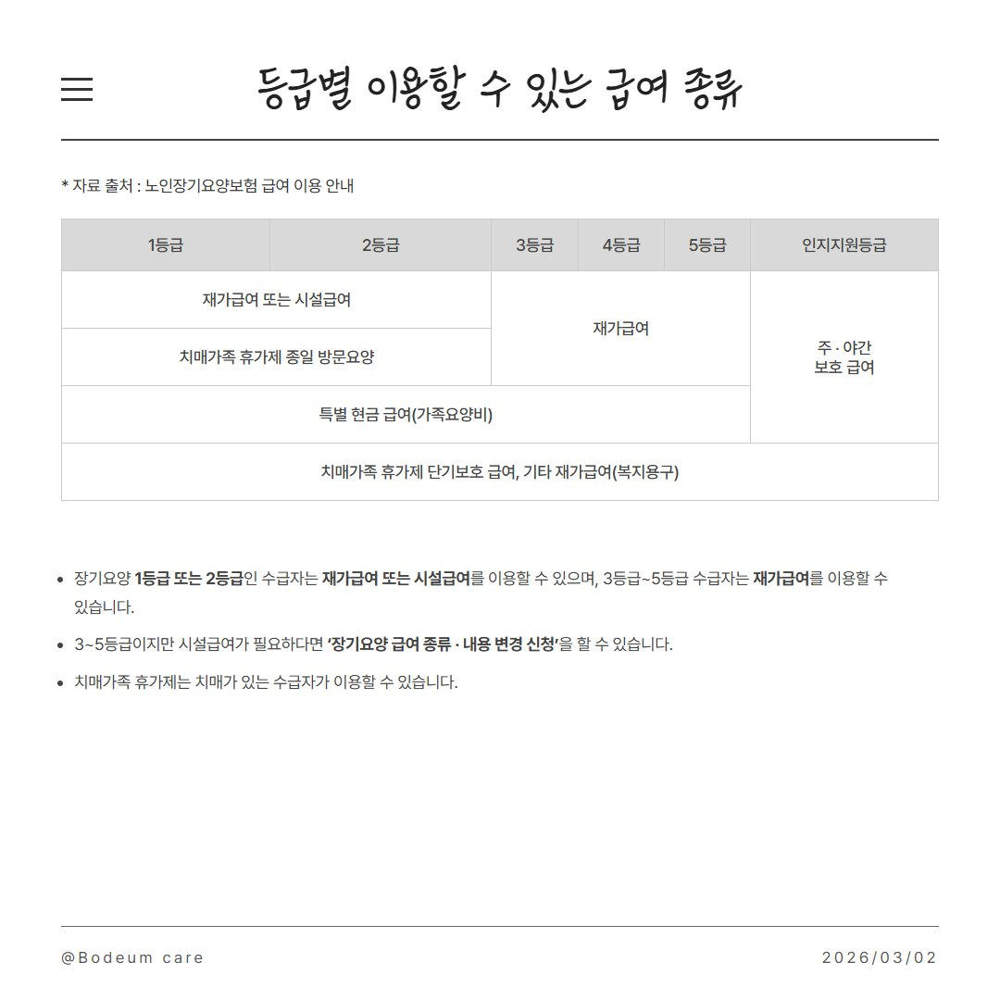
장기요양장기요양 서비스를 받으면 본인부담금이 있나요? 얼마인가요?
A.본인부담금은 보통 장기요양 서비스를 이용한 청구 금액의 15% 정도를 내시면 됩니다. 방문요양 3등급을 기준으로 하루 3시간 이용하면 8,000원 안팎을 내시면 되는데요. 수급자가 감경(차상위 계층) 대상이라면 쓰신 금액의 6%~9%를 내시면 됩니다. (단, 기초생활수급자라면 내실 금액 없음) 여러 서비스를 받으시거나, 받는 서비스와 시간에 따라 본인부담금을 자세히 계산해 보고 싶다면?! 요양 비용 계산기로 확인해 보세요.
A.장기요양 등급 판정을 받은 뒤 원하는 서비스를 받으려면 그 서비스를 하는 요양기관이나 센터를 직접 알아보셔야 하는데요. 보듬케어는 보호자분들의 이런 번거로움을 덜어 드리려고 수급자 가까이 있는 센터를 빠르게 찾아 연결해 드리는 '센터 매칭' 서비스를 하고 있습니다. 가족카드에서 센터 매칭을 고르면 수급자가 이용하고 싶은 서비스(방문요양, 방문목욕, 방문간호, 주간보호 등)를 고를 수 있습니다. 원하는 서비스와 마음에 드는 요양기관을 찾아 '센터 매칭'을 신청하기만 하면 보듬케어가 그 요양기관과 이어 드리는 보듬케어만의 매칭 서비스입니다. 센터 매칭은 신청하고 48시간 안에 수급자 정보를 전하고, 센터와 연결될 수 있도록 도와 드립니다. 단, '센터 매칭'은 등록한 가족카드의 모든 수급자가 이용할 수 있는 서비스는 아닙니다. 장기요양 인정 등급이 있는 만 55세 이상만 신청할 수 있다는 점을 꼭 기억해 주세요. ※ 센터 매칭은 마이페이지 > 가족카드에서 확인하고 신청할 수 있습니다. 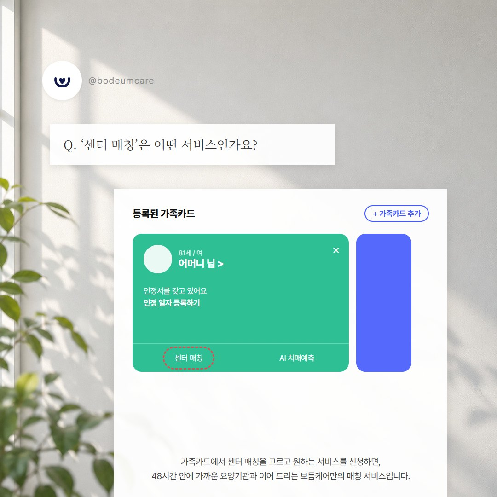
이용 방법부모님(수급자) 집 가까운 센터를 찾고 싶어요,
A.센터찾기 메뉴에서 더 빠르게 가까운 센터를 찾을 수 있습니다. 기관 이름을 모르신다면 원하는 지역을 고르고, 부모님(수급자) 집 가까운 요양센터를 찾아보세요. 주소에서 가까운 순, 추천 순, 최신 순, 별점 높은 순, 후기 많은 순, 시설 분류별.. 원하는 필터로 원하는 정보를 한눈에 볼 수 있습니다. 또 그 지역 센터의 자세한 정보(주소, 연락처, 하는 서비스 등)는 물론 다른 수급자가 남긴 후기와 별점도 볼 수 있습니다. ※ 센터찾기는 위쪽 센터찾기 메뉴(웹)나 앱 아래쪽 '센터찾기'에서 이용할 수 있습니다. 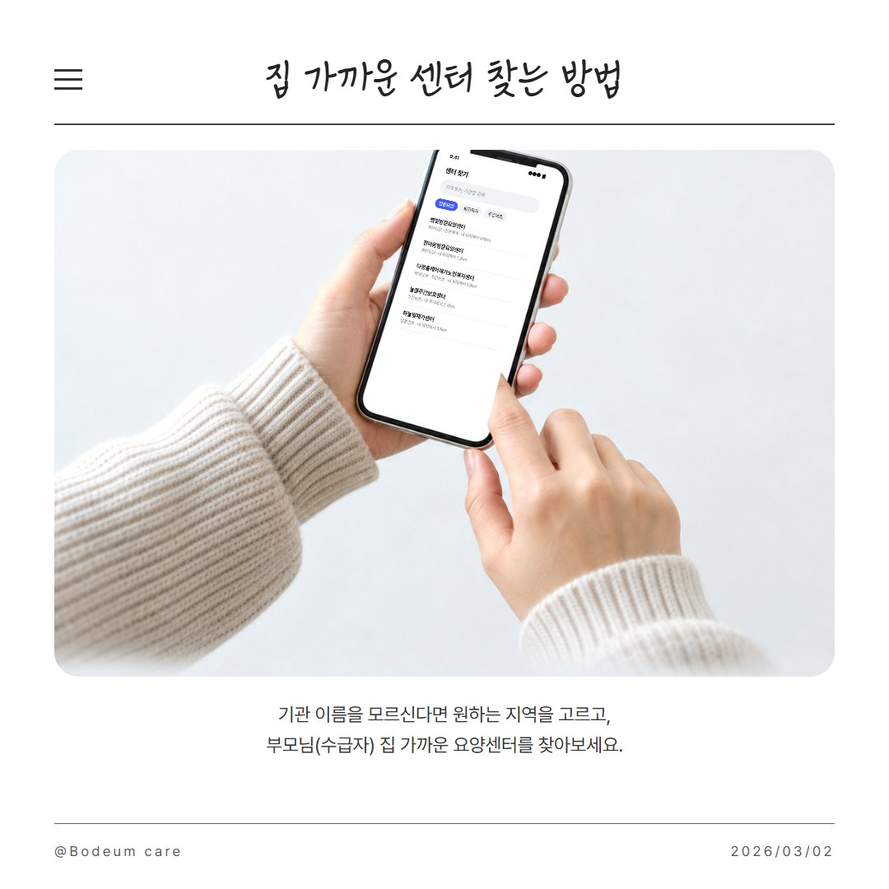
이용 방법장기요양 등급마다 어떤 사례가 있는지 궁금해요
A.보듬케어는 장기요양 등급마다 이용 사례를 볼 수 있도록 하고 있습니다. 장기요양등급은 등급에 따라 받을 수 있는 한도와 서비스가 다릅니다. 또 등급에 따라 보호자가 서비스를 직접 알아보고 계산해야 하는데요. 이럴 때 '장기요양 등급 사례'에서 다른 장기요양 서비스 사례를 보며 같은 등급의 수급자가 어떤 서비스를 이용했는지, 본인부담금은 얼마였는지 참고해 보실 수 있도록 안내해 드립니다. 장기요양 서비스를 비교하고 요양 등급을 계산해 보기 전에 비슷한 사례가 있는지 먼저 살펴보세요.
A.시니어라이프는 이름 그대로 시니어를 위한, 시니어에게 필요한 정보가 가득한 서비스입니다. 요즘 화제가 되는 이야기부터 지식, 라이프, 문화, 헬스, 금융, 요양, 간병까지 여러 분야의 정보를 전해 드립니다. 시니어라이프를 구독하고 싶다면 보듬케어 앱을 내려받고 마이페이지 > 설정에서 '앱 알림'을 켜 주세요! 알아 두면 쓸모 많은 시니어라이프가 새로 올라올 때마다 알림으로 받아 보실 수 있습니다. 😊 앱 알림이 부담스럽다면? 보듬케어 블로그/인스타그램/유튜브 가운데 원하는 SNS를 팔로우해 보세요. 더 알차고 쓸모 있는 정보를 받아 보실 수 있을 거예요.❤️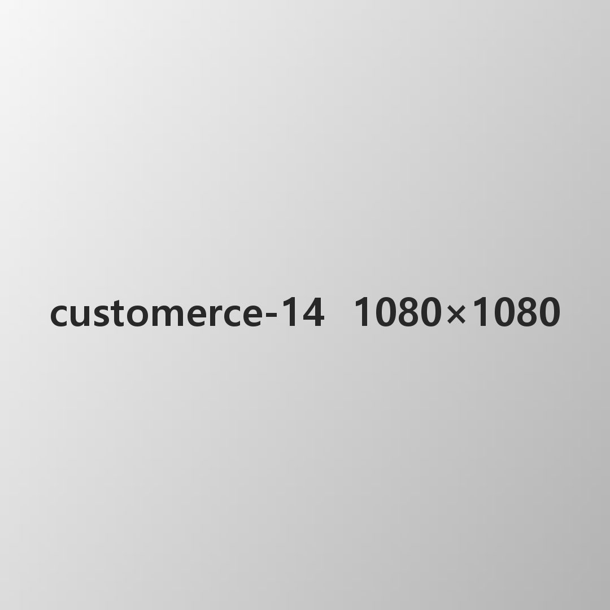
이용 방법장기요양 등급 신청, 센터 매칭을 신청한 내역은 어디서 볼 수 있나요?
A.장기요양 등급 신청과 센터 매칭은 모두 마이페이지 > 가족카드에서 등록하고 관리할 수 있는데요. 마이페이지 > 가족카드에서 가족카드마다 등급 신청 여부, 센터 매칭 진행 상황 등을 따로따로 확인할 수 있습니다.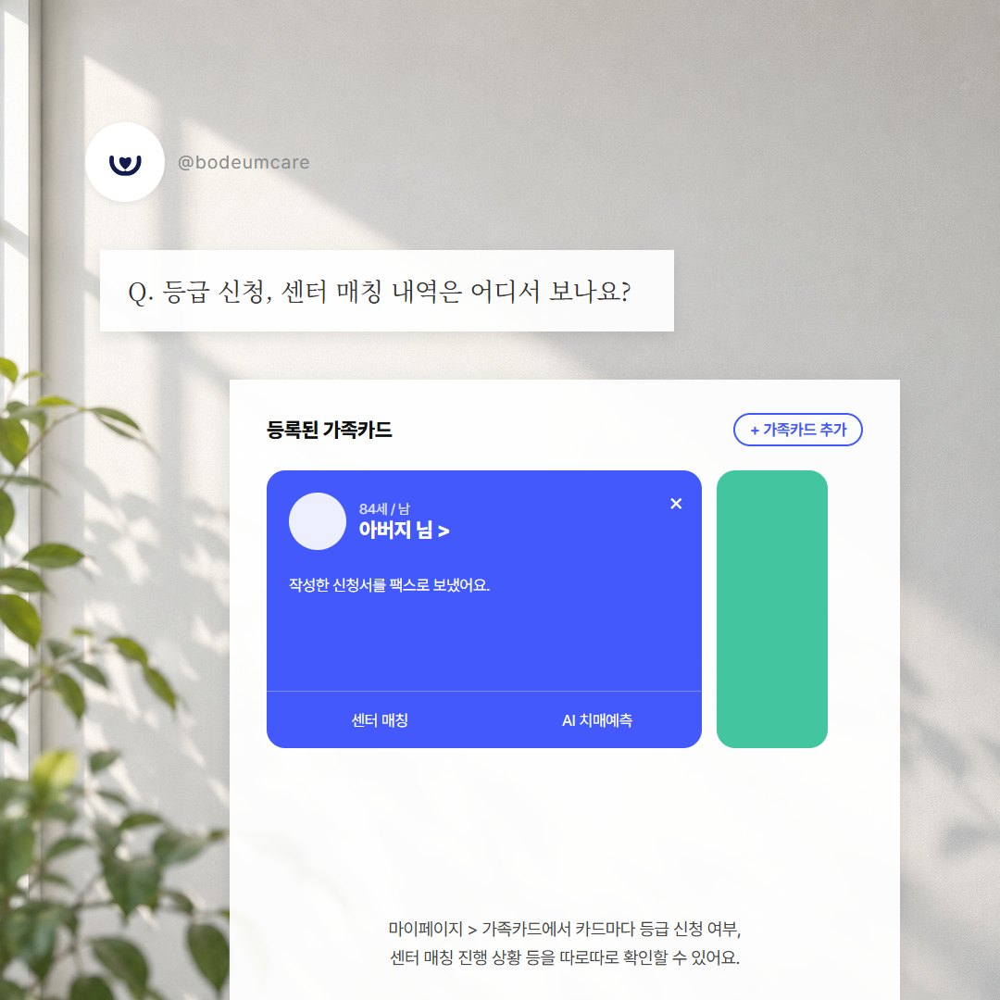
A.아쉽게도 회원 탈퇴를 원하시는군요. .😥 회원 탈퇴는 마이페이지 > 내 정보 > 설정 화면 맨 아래에서 하실 수 있습니다. 다시 만날 날을 기다리겠습니다.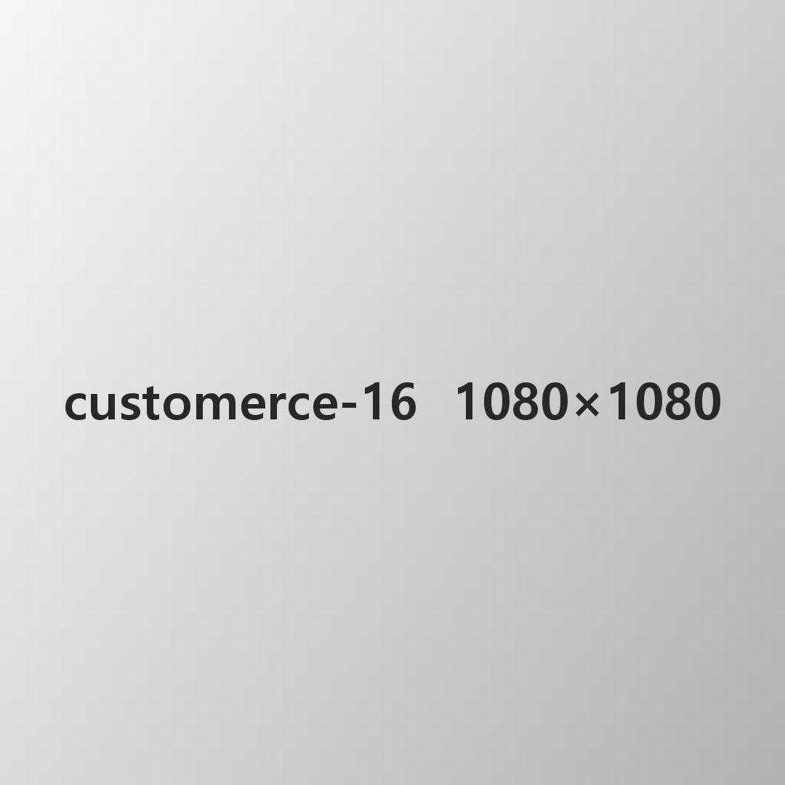
장기요양장기요양 등급에 따라 재가급여 월 이용 한도액은 어떻게 되나요?
A.2025년 기준 장기요양 등급별 재가급여 월 이용 한도액을 알려 드려요. 1등급 : 2,306,400원 2등급 : 2,083,400원 3등급 : 1,485,700원 4등급 : 1,370,600원 5등급 : 1,177,000원 인지지원등급 : 657,400원 이 한도액 안에서 방문요양, 방문목욕, 방문간호, 주야간보호, 단기보호 등 장기요양 서비스를 자유롭게 이용하실 수 있습니다.

 고객센터
고객센터